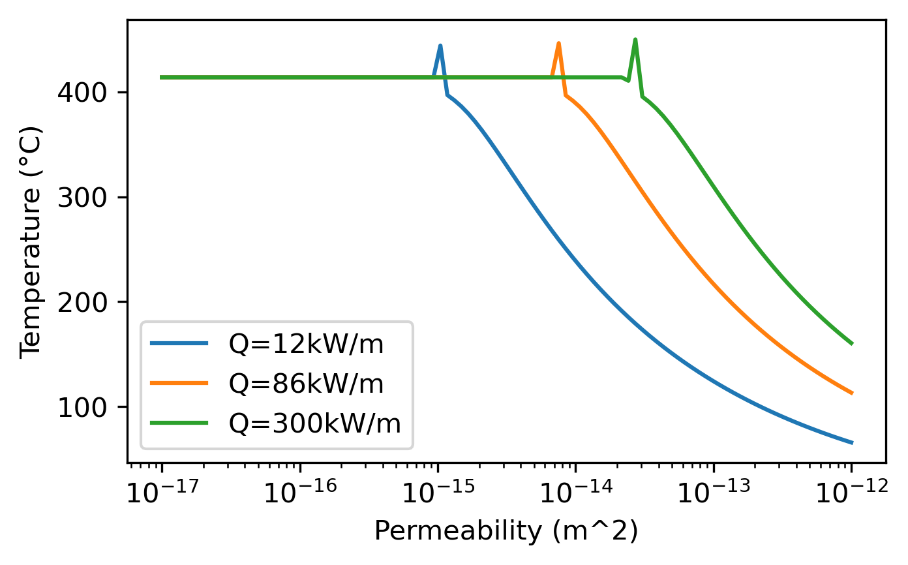

Upflow temperature as a function of permeability (Driesner 2010)
[ ]:
import numpy as np
from scipy.optimize import fminbound
import matplotlib.pyplot as plt
import iapws
IAPWS97_TCRIT = 647.096 #/* K */
IAPWS97_PCRIT = 22.064e6 #/* Pa */
IAPWS97_RHOCRIT = 322. #/* kg/m³ */
IAPWS97_TTRIP = 623.15
import matplotlib as mpl
mpl.rcParams['figure.dpi']= 300
[2]:
# model parameters // iapws module has weird units (MPa vs Pa), be careful and always read the docs!
L = 50 # half-width of upflow zone [m]
P0 = 30 # mean pressure in upflow zonw [MPa]
Q0 = 86e3 # total heat flux per meter ridge axis [W/m]
g = 9.81 #gravity
# parameter space
K = np.logspace(-17, -12, num=100, endpoint=True)
[3]:
#reference values
tmp = iapws.IAPWS97(T=5+273.15, P=P0)
rho0 = tmp.rho
h0 = tmp.h*1000 #J/Kg
[4]:
# hide: the code in this cell is hidden by the author
[5]:
# function to minimize
#def heat_balance_minimize(T0, k):
# steam=iapws.IAPWS97(???) # note that the unit of input T is K, P is MPa
# return ???
[6]:
# hide: the code in this cell is hidden by the author
[ ]:
# hide: the code in this cell is hidden by the author
[14]:
fig=plt.figure(figsize=(5,3))
ax=plt.gca()
ax.plot(K,T_U_12kw, label='Q=12kW/m')
ax.plot(K,T_U_86kw, label='Q=86kW/m')
ax.plot(K,T_U_300kw, label='Q=300kW/m')
ax.set_xscale('log')
ax.set_xlabel('Permeability (m^2)')
ax.set_ylabel('Temperature (°C)')
plt.legend()
[14]:
<matplotlib.legend.Legend at 0x16afa6110>

[ ]: